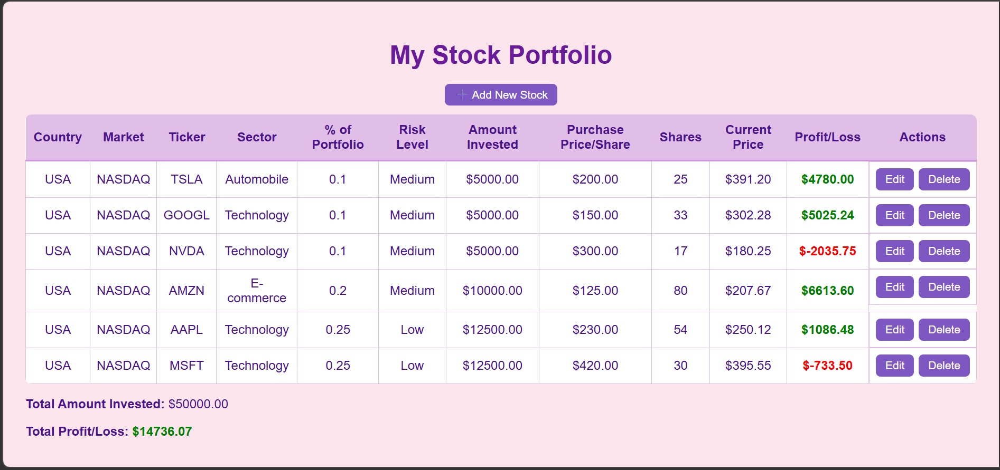
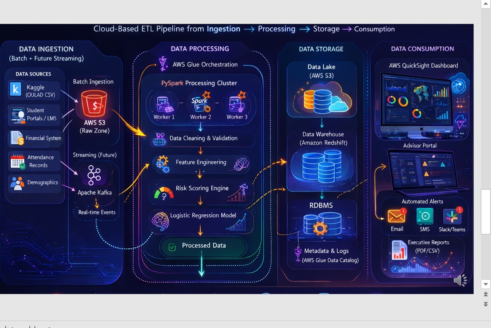

Data Science Graduate Student | Machine Learning | Data Engineering | Python
I am Winnie Munene, a Data Science graduate student at the University of New Haven with a strong background in Physics and Mathematics education. My experience as a teacher helped me develop analytical thinking, problem-solving skills, and a strong interest in understanding patterns within data. This curiosity motivated me to pursue data science, where I can apply analytical techniques to transform data into meaningful insights.
Through my studies, I am developing skills in Python programming, data analytics, statistical analysis, and data visualization. I enjoy working with data to identify trends, explore patterns, and support data-driven decision making. My academic projects focus on applying practical tools and technologies to solve real-world problems using data.
I am particularly interested in using data science to create impactful solutions in areas such as education, technology, and analytics. My goal is to build strong expertise in data analysis and contribute to organizations by turning complex datasets into clear, actionable insights that support better decisions and innovation.
Data Science graduate student with a strong analytical foundation in mathematics, physics, and educational data analysis. Currently pursuing a Master of Science in Data Science and developing practical expertise in Python programming, data analytics, and cloud-based data engineering technologies. My academic training focuses on applying statistical analysis, data preprocessing, and machine learning techniques to extract insights from complex datasets.
In addition to technical training, I bring professional experience from the education sector where I analyzed student performance data, identified learning trends, and supported data-informed decision making to improve academic outcomes. Through graduate coursework and practical projects, I am gaining experience in exploratory data analysis, ETL pipelines, and predictive modeling techniques used in modern data science environments.
I am passionate about leveraging data science to solve real-world problems, improve decision-making processes, and develop innovative analytical solutions across industries such as education, technology, and business analytics.
Programming & Data Tools: Python, SQL, Pandas, NumPy, Excel
Data Analysis: Exploratory Data Analysis (EDA), Statistical Analysis, Data Cleaning
Cloud & Data Engineering: AWS S3, AWS Glue, ETL Workflows, Data Pipelines
Visualization & Reporting: Data Visualization, Analytical Reporting
Professional Skills: Analytical Thinking, Problem Solving, Data-Driven Decision Making
Master of Science in Data Science
University of New Haven – West Haven, Connecticut
Expected Graduation: 2027
Graduate coursework focuses on machine learning, data engineering, big data systems, artificial intelligence, and data visualization. The program emphasizes practical application of data science techniques including data preprocessing, model development, and data pipeline design.
Bachelor’s Degree – Mathematics & Physics Background
Kenya
Completed undergraduate studies with a strong emphasis on mathematical reasoning, quantitative analysis, and scientific problem solving.
Student At-Risk Prediction System (In Progress)
Developing a data-driven analytics system designed to identify students who may be at risk of academic failure or course withdrawal by analyzing academic performance data, attendance patterns, demographic attributes, and online learning engagement metrics.
The project follows the CRISP-DM framework including business understanding, data preparation, predictive modeling, and evaluation. A logistic regression model is currently being developed to generate student risk scores that can assist academic advisors in identifying students who may require early academic support.
The system architecture includes a structured ETL pipeline for ingesting and processing educational datasets, performing data cleaning and validation, and preparing predictive features for modeling. This project demonstrates the integration of data engineering, predictive analytics, and educational data analysis to support early intervention strategies.
Tools: Python, Pandas, Logistic Regression, ETL Pipelines, Data Analysis
Stock Portfolio Web Project
Developed a web-based project designed to organize and display stock portfolio information through a structured user interface. The project demonstrates basic web development skills combined with data handling techniques used to manage and display financial information.
Tools: Python, HTML, CSS
Data Analysis Coursework Projects
Conducted exploratory data analysis using Python libraries such as Pandas and NumPy to clean, process, and analyze datasets. These projects involved identifying patterns in data, preparing structured datasets for analysis, and generating insights through statistical exploration.
Tools: Python, Pandas, NumPy
AWS Data Engineering Labs
Completed hands-on exercises using AWS cloud services to understand modern data engineering workflows. These labs involved working with AWS S3 storage, AWS Glue ETL services, and basic cloud-based data pipeline concepts used in modern data processing environments.
Tools: AWS S3, AWS Glue, Python
Mathematics & Physics Teacher
Githurai Mixed High School – Nairobi, Kenya
2021 – 2025
Taught mathematics and physics while supporting the development of analytical reasoning and problem-solving skills among students. Designed instructional materials and lesson plans aligned with curriculum objectives to improve student comprehension of complex scientific concepts.
Regularly analyzed student assessment data to identify learning gaps and adjust instructional strategies to improve academic outcomes. This experience strengthened my ability to interpret performance data and apply data-informed approaches to educational decision making.
Examinations Coordinator
Githurai Mixed High School – Nairobi, Kenya
Managed examination schedules, coordinated assessment processes, and maintained structured academic records for student evaluations. Ensured accurate documentation of examination results and supported administrative processes related to academic performance tracking.
Volunteer Teacher
Kiwanja High School – Nairobi, Kenya
2018 – 2020
Supported mathematics and physics instruction while mentoring students in analytical thinking and problem-solving techniques. Assisted in classroom activities and provided additional academic support to help students strengthen their understanding of scientific concepts.
AWS Academy Cloud Foundations
Completed formal training in cloud computing concepts, AWS architecture, and core cloud services used in modern computing environments. The certification provides foundational understanding of cloud infrastructure, storage services, and cloud-based application development.
Download PDF VersionThis project is a web application that allows users to track and manage their stock investments. Users can add stocks to their portfolio, record purchase prices, number of shares, and view the current value of their investments.
The system automatically calculates profit or loss based on the difference between the purchase price and the current market price. This helps users monitor their investment performance and make informed financial decisions.
Technologies Used: Python, Flask, HTML, CSS

View Project Code
Designing a data-driven system to identify students who may be at risk of academic failure or withdrawal using academic performance and engagement data. The project analyzes assessment scores, attendance records, demographic information, and online learning interactions to detect patterns associated with declining academic outcomes.
The system follows the CRISP-DM methodology and includes data preprocessing, exploratory data analysis, and predictive modeling using logistic regression to generate student risk scores.
Tools: Python, Pandas, AWS, PySpark, ETL Pipelines
Issued by Amazon Web Services. This certification covers the fundamentals of cloud computing, AWS core services, security, architecture, and cloud deployment models.
View CertificateThis certificate demonstrates knowledge of Python programming, working with datasets, and applying Python tools for data analysis and problem solving in data science projects.
View CertificateThis certification focuses on data analysis techniques including data cleaning, exploration, and interpreting results to support data-driven decision making.
View CertificateEmail: winniemunene83@gmail.com
GitHub: github.com/winniemunene83-oss
LinkedIn: linkedin.com/in/winnie-munene-6277603a9
Location: Connecticut, USA